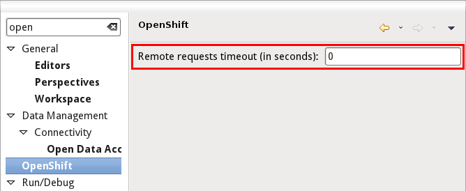

2.5.1.CR1
Preferences
Remote request Timeout
There is now a preference available to set the timeout used when waiting for OpenShift requests to complete. We’re using a default of 120 seconds (2 minutes) if no preference value (0) is provided. You can try raise this value if you are getting time out errors when using OpenShift.

2.5.1.Beta1
Application Wizard
Multiple Domains
OpenShift now allows you to have several domains. You may own multiple domains if you are on Silver Plan. But it’s also possible to get access to other peoples domains. JBoss Tools now supports these setups and lets you choose the domain you’re creating an application for.
The OpenShift Explorer now shows a domain-node.
And we offer you a wizard to create, rename and delete your domains.

Environment Variables
Environment varibales in OpenShift allow you to easily customize your application at runtime. JBoss Tools allows you to provide environment variables when creating an application.
Existing applications may also have their environment variables modified.
Tail Files
Tail files for scaled applications
In Beta1 we now allow you to inspect the log files on all gears of a scalable application. When executing "Tail Files…" we’ll show you the number of gears that an application is running on.
We’ll then open a separate console for each of them and allow you to inspect all logs.
Embedding Cartridges
Warn on incompatible cartridges
In Beta1 we start to warn you when you try to embed an incompatible cartridge. We’ll prmpt you with a warning that the non-scalable phpmyadmin cartridge cannot get added to a scalable application.
2.5.1.Alpha2
Tail Log Files
OpenShift Java Client
When looking at the log files in your OpenShift application the tooling allows you to provide your very own settings. In Alpha2 we now store these personalized options on a per-application basis. This frees you from re-providing them.
Related Jira
2.5.1.Alpha1
Application Wizard
Create applications with your own source
You can create a new application with your very own source code since JBoss Tools 4.0.
use your own source code
There are openshift quickstarts that require long timeouts because the size of the source code being checked out is very large. Another frequent requirement is that embedded (add-on) cartridges have to be present when the application is created. Adding the cartridges in a 2nd step wont help; the initial application build fails. It was not possible, for example, to create the OpenShift wordpress quickstart at https://github.com/openshift/wordpress-example within JBoss Tools. The update to 4.1.1.Alpha1 fixed this.
Related Jira
OpenShift java client
Embeddables cartridges at application creation time
The openshift-java-client now allows you to provide embeddable cartridges when you create an application. Previously these could only get added once the application was ready. This might be required when you use your own application template source.
Related Jira
Specific timeouts
The openshift-java-client now allows you to use a specific timeout in your operation. This is useful if you know that it takes much longer to create your application with your custom source than it takes for the default. Previously you had to increase the global timeout.
Related Jira